Spiritmaster
Walczy przywołaniami oraz magią statusów i obrażeń w czasie, z dystansu. Broń: Orb. Rola: DPS magiczny.
Skille i pasywki: opracowanie autora (Global, 31.10.2026). Stygmy: Aion 2 Companion i, gdzie jest, ściąga.
Skille aktywne
Cold Shock
16
Atak podstawowy: 360 (+51,5% Attack) obrażeń od wody celowi w 20 m, przywraca 100 MP. Łańcuch: Vacuum Explosion → Earth Tremor (razem 100/100/150 MP). Mobilny.
aion2data, ereskus („16 najlepsze na start”), koreański poradnik — 16; Sirin 16–20 (20 dla leczenia). Konflikt: Aion2Vault lvl 45: 12–14.
Specjalizacje
- lvl 8+20% przywracanego MP +20% MP restored — aLuckyRO, Grobs
- lvl 8Pochłania 1% HP Absorbs 1% HP — Sirin (sytuacyjnie / lvl 20), aion2.gg (3.)
- lvl 8+50% Multi-Hit przy trafieniuzalecane +50% Multi-Hit on hit — ereskus, Sirin, init.rb, aion2.gg
- lvl 12+2% Attack za Earth Tremor (do 5 stacków)zalecane +2% Attack on landing [Earth Tremor] (Up to 5 stacks) — wszyscy
- lvl 1610% szansy na zdjęcie 1 buffa 10% chance to remove 1 buff on landing [Earth Tremor]
Wybór: Multi-Hit + stacki ataku z Earth Tremor (ereskus: #3 + #4). Przy braku many: +20% MP zamiast Multi-Hit (aLuckyRO, Grobs).
karta skilla na aion2.gg · Opracowanie autora na danych klienta Global (aion2data, wartości przy poziomie 10 skilla, stan 31.10.2026).
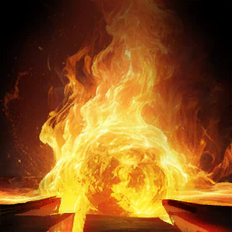
Combustion
20
Wybiera cel w 20 m i zadaje 462 (+67,25% Attack) obrażeń od ognia do 4 wrogom w promieniu 4 m od celu. 3 pkt Stagger.
Cel 20: aion2data, ereskus („must”), Sirin, aion2.gg (build: „trzy twarde 20”). Aion2Vault (lvl 45): init.rb 14, Grobs 16, init.rb V1 20.
Specjalizacje
- lvl 8−20% zużycia MP -20% MP consumed — aLuckyRO na start
- lvl 8Do +12% obrażeń przy mniejszej liczbie celówzalecane Deals up to 12% more damage when less targets are hit — ereskus, Sirin, Aion2Vault
- lvl 8+100 Skill Accuracy +100 Skill Accuracy — aion2.gg
- lvl 12+20% Skill Speedzalecane +20% Skill Speed — wszyscy
- lvl 16Łańcuch Ashy Callzalecane Adds [Ashy Call] Chain Skill — wszyscy od lvl 16
Wybór: Do 15: +12% (mniej celów) + Skill Speed. 16–19: Ashy Call + Skill Speed (Sirin, aion2.gg). Na 20: #2 + #4 + #5 (ereskus).
karta skilla na aion2.gg · Opracowanie autora na danych klienta Global (aion2data, wartości przy poziomie 10 skilla, stan 31.10.2026).
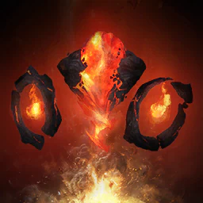
Summon: Fire Spirit
16–20
Przywołuje Fire Spirit: doskakuje do celu i zadaje 781 (+120% Attack) obrażeń do 4 wrogom w 5 m; walczy atakami podstawowymi z 15% szansy na skill. Każdy lvl: +2% Attack i Defense ducha.
Konflikt: ereskus i aion2.gg — 20; Sirin — 16–20 („20 opcjonalnie”); aion2data — 16 (top: 16,9). Aion2Vault: 14–16.
Specjalizacje
- lvl 8−50% kosztu MP -50% MP Cost
- lvl 8+20% obrażeń krytycznych duchazalecane +20% Fire Spirit Critical Hit damage — ereskus, Sirin, Aion2Vault
- lvl 810% szansy na skill ducha przy trafieniuzalecane 10% chance to activate skill when Fire Spirit lands attack — Aion2Vault, aion2.gg, ereskus
- lvl 125% szansy na Knockdown 3 s 5% chance to inflict Knockdown for 3s on landing Fire Spirit attack
- lvl 16+20% statystyk duchazalecane +20% Fire Spirit Stats — wszyscy od 16
Wybór: Do 15: #2 + #3. 16–19: Sirin #2 + #5. Na 20: #2 + #3 + #5 (ereskus).
karta skilla na aion2.gg · Opracowanie autora na danych klienta Global (aion2data, wartości przy poziomie 10 skilla, stan 31.10.2026).
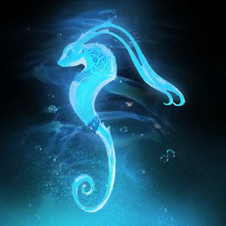
Summon: Water Spirit
14–16
Przywołuje Water Spirit: skill 1 057 (+145% Attack) obrażeń od wody w cel w 20 m; ataki podstawowe z 15% szansy na skill i +20 MP dla Ciebie za trafienie. Każdy lvl: +2% Attack i Crit ducha.
ereskus i aion2data — 16 (ereskus: 20 „miłe”); Sirin — 14–16; Aion2Vault: 12. Top gracze: 15,4.
Specjalizacje
- lvl 8−50% kosztu MP -50% MP Cost
- lvl 8+10% Attack duchazalecane +10% Water Spirit Attack — ereskus, Sirin, Aion2Vault
- lvl 810% szansy na skill duchazalecane 10% chance to activate skill when Water Spirit lands attack — Aion2Vault, aion2.gg (Sirin poniżej 16)
- lvl 125% szansy na Root 2 s 5% chance to inflict Root for 2s on landing Water Spirit attack
- lvl 16+20% statystyk duchazalecane +20% Water Spirit Stats — ereskus, Sirin od 16
Wybór: Do 15: #2 + #3. Od 16: #2 + #5 (ereskus, Sirin).
karta skilla na aion2.gg · Opracowanie autora na danych klienta Global (aion2data, wartości przy poziomie 10 skilla, stan 31.10.2026).
Jointstrike: Curse
12–16
546 (+75% Attack) obrażeń do 4 wrogom w 4 m od celu i Curse: 1 093 (+150% Attack) co 1 s przez 5 s, cel zadaje Ci o 10% mniej obrażeń. Duch dołącza do ataku.
Konflikt: aion2data i ereskus — 16 (Tajwan: 20); Sirin — 12–14; Aion2Vault: 12–14. Top gracze: 15,2.
Specjalizacje
- lvl 8+2 s czasu Curse +2s Curse duration — ereskus, aLuckyRO, aion2.gg
- lvl 8+50% Multi-Hit przy trafieniu +50% Multi-Hit on hit — Hemi, Tsuruf
- lvl 8Użycie w ruchuzalecane Changes to mobile skill — ereskus, Sirin, init.rb, OneTimeACraft, Hemi
- lvl 12−2 s cooldownuzalecane -2s cooldown — Sirin, aLuckyRO, init.rb, aion2.gg
- lvl 16Ignoruje Block i Evasion, zawsze krytyk [Jointstrike: Curse] ignores Block and Evasion and lands as a Critical Hit — aion2.gg na 16
Wybór: Ruch + −2 s CD (Sirin, init.rb). ereskus: ruch + 2 s czasu (#1 + #3).
karta skilla na aion2.gg · Opracowanie autora na danych klienta Global (aion2data, wartości przy poziomie 10 skilla, stan 31.10.2026).
Rapid Scattershot
16
Zadaje 4 × 678 (+82,5% Attack) obrażeń celowi pod Staggerem w 20 m.
Sirin i ereskus — 16 (opcja −1 s CD „kluczowa” przy małym CDR na Global). Aion2Vault: 13–16. Na pasku 74% buildów.
Specjalizacje
- lvl 8Pochłania 5% HP Absorbs 5% HP — aLuckyRO (zależnie od walki)
- lvl 8Przywraca 120 MP Restores 120 MP — aion2.gg, aLuckyRO
- lvl 8Użycie w ruchu Changes to mobile skill — ereskus poniżej 16, aLuckyRO
- lvl 12Multi-Hit przy trafieniuzalecane Multi-Hit on hit — ereskus, Sirin, init.rb V1
- lvl 16−1 s CD wszystkich skilli za trafieniezalecane -1s all skill cooldowns on hit — ereskus, Sirin, init.rb V1
Wybór: Na 16: Multi-Hit + −1 s CD wszystkiego (#4 + #5). Poniżej 16 ereskus: ruch + Multi-Hit.
karta skilla na aion2.gg · Opracowanie autora na danych klienta Global (aion2data, wartości przy poziomie 10 skilla, stan 31.10.2026).
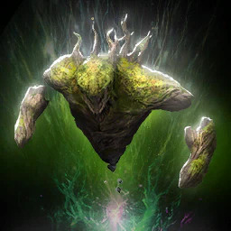
Summon: Earth Spirit
14–16
Przywołuje Earth Spirit: skill 1 215 (+135% Attack) obrażeń od ziemi i +10 500 Enmity (30% szansy na Taunt 2 s na graczu); ataki podstawowe z 10% szansy na skill. Każdy lvl: +2% Defense i HP ducha.
ereskus i aion2data — 16; Sirin — 14–16; Aion2Vault: 12–13. Top gracze: 14,6.
Specjalizacje
- lvl 8−50% kosztu MP -50% MP Cost — Grobs
- lvl 8+20% PvE Damage Tolerance duchazalecane +20% PvE Damage Tolerance and +10 PvP Damage Tolerance to Earth Spirit — ereskus, Aion2Vault
- lvl 810% szansy na skill duchazalecane 10% chance to activate skill when Earth Spirit lands attack — ereskus, Sirin, aion2.gg, Aion2Vault
- lvl 125% szansy na +5% HP ducha 5% chance to restore 5% of Spirit HP when landing Earth Spirit attack
- lvl 16+20% statystyk ducha +20% Earth Spirit Stats — Sirin od 16 (#5 + #3)
Wybór: Tolerance + 10% szansy na skill (ereskus #2 + #3). Sirin od 16: statystyki + szansa na skill.
karta skilla na aion2.gg · Opracowanie autora na danych klienta Global (aion2data, wartości przy poziomie 10 skilla, stan 31.10.2026).
Dimensional Control
12–16
Dostępny przez chwilę po każdym skillu ducha. 774 (+86% Attack) obrażeń do 4 wrogom w 4 m od celu, spowolnienie −40% na 3 s, przywraca 100 MP.
ereskus — 16; Sirin — 12–14; aion2data bez liczby (top: 15,4); Aion2Vault: 12–13.
Specjalizacje
- lvl 8+20% spowolnienia +20% Slow effect
- lvl 8Dodatkowe obrażenia po 3 szalecane Extra damage after 3s on hit — wszyscy
- lvl 8+50% Multi-Hit przy trafieniuzalecane +50% Multi-Hit chance on hit — wszyscy
- lvl 12Przyciąga pobliskie cele Pull in nearby targets
- lvl 1630% szansy na Root 3 s 30% chance to inflict Root for 3s on hit
Wybór: Dodatkowe obrażenia + Multi-Hit (#2 + #3) — zgodnie wszyscy.
karta skilla na aion2.gg · Opracowanie autora na danych klienta Global (aion2data, wartości przy poziomie 10 skilla, stan 31.10.2026).
Summon: Wind Spirit
1–16*
Przywołuje Wind Spirit: skill 4 × 1 062 (+111% Attack) obrażeń od wiatru do 4 wrogom w 5 m i leczy Cię o 633–696 HP; ataki podstawowe z 10% szansy na skill, +1,5% HP za trafienie. Każdy lvl: +2% Accuracy i Crit ducha.
* Konflikt: aion2.gg — zostaw na lvl 1; ereskus — „nie w PvE”; Sirin — 14–16 (4 duchy w rotacji); Grobs — 20 (makro na 4 duchy). Top gracze: 7,6. Na pasku 36% buildów.
Specjalizacje
- lvl 8−50% kosztu MP -50% MP Cost
- lvl 8+20% Crit duchazalecane +20% Wind Spirit Critical Hit — Sirin, Aion2Vault
- lvl 810% szansy na skill duchazalecane 10% chance to activate skill when Wind Spirit lands attack — Aion2Vault (Sirin poniżej 16)
- lvl 125% szansy na −30% Attack Speed wroga na 10 s 5% chance to reduce enemy Attack Speed by 30% for 10s on landing Wind Spirit attack
- lvl 16+20% statystyk ducha +20% Wind Spirit Stats — Sirin od 16
Wybór: Tylko jeśli grasz 4 duchami: Crit + szansa na skill; od 16 Crit + statystyki (Sirin).
karta skilla na aion2.gg · Opracowanie autora na danych klienta Global (aion2data, wartości przy poziomie 10 skilla, stan 31.10.2026).
Soul's Cry
pomiń*
Zadaje 957 (+100% Attack) obrażeń celowi w 20 m z 70% szansy na Fear 5 s (100% na NPC). 15 pkt Stagger.
*ereskus — „nie używany w PvE”; aLuckyRO — „bezużyteczny” w PvE. Sirin trzyma na 12–14. Na pasku 40% buildów (głównie PvP).
Specjalizacje
- lvl 8+50% Multi-Hit przy trafieniu +50% Multi-Hit on hit — aion2.gg
- lvl 8Root na 5 s Inflicts Root for 5s
- lvl 8Użycie w ruchu Changes to mobile skill — Sirin (#3)
- lvl 12−10 s cooldownu -10s cooldown — Sirin (#4)
- lvl 16+2 s czasu Fear +2s Fear duration
Wybór: Brak zgody (skill głównie PvP). Sirin: −10 s CD + ruch; aion2.gg: Multi-Hit.
karta skilla na aion2.gg · Opracowanie autora na danych klienta Global (aion2data, wartości przy poziomie 10 skilla, stan 31.10.2026).
Elemental Fusion
20
Każdy skill ducha daje żywioł; przy 4 stackach dostajesz Four Elements i możesz użyć Elemental Fusion (zużywa stan). Zadaje 3 314 (+331,8% Attack) obrażeń celowi w 20 m.
Cel 20: aion2data, ereskus, Sirin, aion2.gg. Top gracze: średnio 18,9 (aion2data). Aion2Vault lvl 45: 14–20.
Specjalizacje
- lvl 8Zmienia na obszarowy (AoE) Changes to AoE Skill
- lvl 8Dodatkowe obrażenia po 3 szalecane Extra damage after 3s on hit — ereskus, Sirin, init.rb, aion2.gg
- lvl 8+10% Element Boost (wszystkie żywioły)zalecane +10% all Element Boost on hit — ereskus, init.rb, Grobs
- lvl 12Skill ładowany, do +200% obrażeń Changes to Charge Skill, dealing up to 200% more damage — aLuckyRO (rzucany ręcznie)
- lvl 1625% szansy na odzyskanie Four Elementszalecane 25% chance to regain Four Elements — Sirin, Grobs, aion2.gg od 16
Wybór: Do 15: #2 + #3. 16–19: regain + dodatkowe obrażenia (Sirin, aion2.gg) lub + Element Boost (Grobs). Na 20: #2 + #3 + #5 (ereskus).
karta skilla na aion2.gg · Opracowanie autora na danych klienta Global (aion2data, wartości przy poziomie 10 skilla, stan 31.10.2026).

Defiance
12–16
Usuwa Stun, Knockdown, Airborne, Grab, Frost i Fear; daje Tenacity (odporność na efekty) na 5 s. Niezależny od redukcji CD.
ereskus — 16; Sirin — 12–14; aion2.gg — 10 albo 1 (punkty na Spirit Protection). Na pasku 12% buildów.
Specjalizacje
- lvl 8Łańcuch Curse of Despair Adds [Curse of Despair] Chain Skill
- lvl 8+1000 Staminy po użyciu Restores 1,000 Stamina on using [Defiance]
- lvl 8+20% HP po użyciuzalecane Restores 20% HP on using [Defiance] — ereskus, Sirin, aion2.gg
- lvl 12+2 s Tenacity +2s Tenacity duration — Sirin, aion2.gg
- lvl 16+50% PvE Damage Tolerance na czas Tenacity +50% PvE Damage Tolerance and +25% PvP Damage Tolerance for Tenacity duration — ereskus (#3 + #5)
Wybór: +20% HP, potem +2 s Tenacity (Sirin) lub Damage Tolerance (ereskus).
karta skilla na aion2.gg · Opracowanie autora na danych klienta Global (aion2data, wartości przy poziomie 10 skilla, stan 31.10.2026).
Pasywki
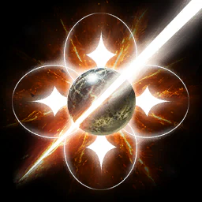
Spirit Strike
max
+15% PvE Damage Boost, +7,5% PvP Damage Boost i +4% Perfect Chance dla Ciebie i ducha (lvl 10).
Pierwsza pasywka u wszystkich (Aion2Vault, aion2.gg, Sirin S-tier, ereskus nr 2: cel 28–30 w Season 1).
Pasywka nie ma specjalizacji.
karta skilla na aion2.gg · Opracowanie autora na danych klienta Global (aion2data, wartości przy poziomie 10 skilla, stan 31.10.2026).
Spirit Protection
niski
+20% Defense dla Ciebie i ducha.
Sirin C-tier; aion2.gg: defensywna / PvP (build zostawia na 5); aLuckyRO: środek kolejki; OneTimeACraft: ostatnia.
Pasywka nie ma specjalizacji.
karta skilla na aion2.gg · Opracowanie autora na danych klienta Global (aion2data, wartości przy poziomie 10 skilla, stan 31.10.2026).
Spirit's Descent
opcjonalnie
50% szansy na 224 (+26% Attack) dodatkowych obrażeń przez 10 s po przywołaniu ducha (30 s po Ancient Spirit).
Sirin B-tier; aLuckyRO między 1. a 2. priorytetem. Poziomu nie podano.
Pasywka nie ma specjalizacji.
karta skilla na aion2.gg · Opracowanie autora na danych klienta Global (aion2data, wartości przy poziomie 10 skilla, stan 31.10.2026).
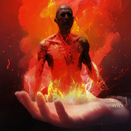
Corrode
opcjonalnie
+190 Critical Hit i 50% szansy na 483 (+50,5% Attack) obrażeń przy krytyku (lvl 10).
Sirin B-tier; aLuckyRO: później, przy ok. 800–1000 Crit.
Pasywka nie ma specjalizacji.
karta skilla na aion2.gg · Opracowanie autora na danych klienta Global (aion2data, wartości przy poziomie 10 skilla, stan 31.10.2026).
Spirit Revitalization
priorytet 4
20% szansy na −1 s CD przywołań przy trafieniu; leczy ducha o 30% Max HP, gdy ma ≤50% HP (CD 30 s).
ereskus nr 4 (więcej Elemental Fusion), Sirin A-tier, Hemi, Tsuruf.
Pasywka nie ma specjalizacji.
karta skilla na aion2.gg · Opracowanie autora na danych klienta Global (aion2data, wartości przy poziomie 10 skilla, stan 31.10.2026).
Mental Focus
max*
+20% szansy na efekty typu Mental i +3% Double Chance (lvl 10).
*Sirin S-tier, ereskus nr 1 (cel 32), aion2data, Hemi, init.rb, Grobs. Konflikt: aLuckyRO uważa ją za pasywkę PvP.
Pasywka nie ma specjalizacji.
karta skilla na aion2.gg · Opracowanie autora na danych klienta Global (aion2data, wartości przy poziomie 10 skilla, stan 31.10.2026).
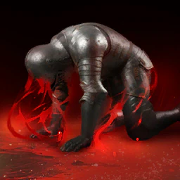
Consecutive Countercurrent
opcjonalnie
50% szansy na 248 (+23,5% Attack) dodatkowych obrażeń na celu pod DoT.
Sirin B-tier. Inne poradniki bez zalecenia.
Pasywka nie ma specjalizacji.
karta skilla na aion2.gg · Opracowanie autora na danych klienta Global (aion2data, wartości przy poziomie 10 skilla, stan 31.10.2026).
Spirit Communion
pomiń*
+100 Accuracy i 10% szansy na leczenie Ciebie i ducha o 471–518 HP przy trafieniu.
*Sirin C-tier, aLuckyRO: niski priorytet.
Pasywka nie ma specjalizacji.
karta skilla na aion2.gg · Opracowanie autora na danych klienta Global (aion2data, wartości przy poziomie 10 skilla, stan 31.10.2026).

Revitalization Contract
pomiń (PvP)
+35% Status Effect Resist; +10% na 5 s przy trafieniu pod kontrolą (do 10 stacków); leczy 44% Max HP przy ≤10% HP (CD 60 s).
Sirin C-tier, aion2.gg i aLuckyRO: pasywka PvP.
Pasywka nie ma specjalizacji.
karta skilla na aion2.gg · Opracowanie autora na danych klienta Global (aion2data, wartości przy poziomie 10 skilla, stan 31.10.2026).
Element Unification
priorytet 3
+2% Critical Damage Boost dla Ciebie i ducha na 10 s za każde trafienie skillem ducha, do 5 stacków.
ereskus nr 3, Sirin A-tier, Hemi, Tsuruf, OneTimeACraft. aLuckyRO pomija na start.
Pasywka nie ma specjalizacji.
karta skilla na aion2.gg · Opracowanie autora na danych klienta Global (aion2data, wartości przy poziomie 10 skilla, stan 31.10.2026).
Stygmy
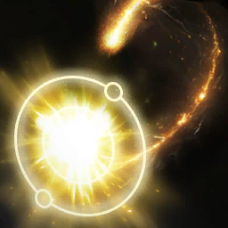
Siphon
przetrwanie
1 180 / 3 306 i 300 MP obrażeń jeden cel; pochłania 10% HP i przywraca 300 MP
Alternatywa: pochłania 10% HP, na poziomie 15 tarcza 30% Max HP (Sirin). 8% buildów.
Perki stygmy
- poziom 5+20% Skill Speed
- Cooldown30 s
- poziom 201 180 / 3 306 i 300 MP obrażeń jeden cel; pochłania 10% HP i przywraca 300 MP
- poziom 5+20% Skill Speed
- poziom 5+5% HP absorbed
- poziom 5Tarcza of 30% Max HP na 30 s
- poziom 5Stun na 3 s
karta skilla na aion2.gg · Aion 2 Companion (aion2.grimvane.app), wartości Global przy podanym poziomie skilla.
Cry of Terror
brak danych
859 / 2 407 do 4 w 4 m; 50% szansy na Fear players na 5 s, always na NPCs
Perki stygmy
- poziom 5Root na 5 s
- Cooldown90 s
- MP200
- poziom 20859 / 2 407 do 4 w 4 m; 50% szansy na Fear players na 5 s, always na NPCs
- poziom 5Root na 5 s
- poziom 5Do +20% obrażeń na więcej celów
- poziom 5+2 s Fear
- poziom 5+20% Fear chance
karta skilla na aion2.gg · Aion 2 Companion (aion2.grimvane.app), wartości Global przy podanym poziomie skilla.
Jointstrike: Corrode
w zestawie
429 / 1 203 do 4 w 4 m; Corrode na 20 s, +10% obrażeń taken od spirits i obrażeń over time każdy second (859 / 2 407); spirit dodaje-on
Build PvE: 87%. Na poziomie 20 +10 s Corrode, przy dużym CDR pokrywa się samo.
Perki stygmy
- poziom 5+15% obrażeń taken od spirits
- Cooldown45 s
- MP200
- poziom 20429 / 1 203 do 4 w 4 m; Corrode na 20 s, +10% obrażeń taken od spirits i obrażeń over time każdy second (859 / 2 407); spirit dodaje-on
- poziom 5+15% obrażeń taken od spirits
- poziom 5-20% Combat Speed przy trafieniu na 10 s
- poziom 5-70% incoming healing
- poziom 5+10 s Corrode
karta skilla na aion2.gg · Aion 2 Companion (aion2.grimvane.app), wartości Global przy podanym poziomie skilla.
Command: Proxy
brak danych
Na 4 s, spirit z most HP shares obrażeń ciebie take w 25 m i gets +20% PvE i +10% PvP obrażeń tolerance; tooltip gives same figure for twoje share i spirit's, 50% przy poziom 1, 41% przy 10 i 31% przy 20; unaffected o cooldown zwiększa
Perki stygmy
- poziom 5+2 s
- Cooldown60 s
- poziom 20Na 4 s, spirit z most HP shares obrażeń ciebie take w 25 m i gets +20% PvE i +10% PvP obrażeń tolerance; tooltip gives same figure for twoje share i spirit's, 50% przy poziom 1, 41% przy 10 i 31% przy 20; unaffected o cooldown zwiększa
- poziom 5+2 s
- poziom 5Więcej PvP obrażeń tolerance dla ciebie i spirit
- poziom 5X1,5 Spirit Protection w trakcie Proxy
- poziom 5Spirit leczy 3% of jego HP każdy second
karta skilla na aion2.gg · Aion 2 Companion (aion2.grimvane.app), wartości Global przy podanym poziomie skilla.
Enhance: Spirit's Benediction
przed Ancient
10 s of +20% PvE (+10% PvP) Damage Boost i obrażeń tolerance, healing 1 850 do 2 035 / 6 250 do 6 875 HP second, dla ciebie i spirit; unaffected o cooldown zwiększa
Build PvE: 97% buildów Vault. Rzuć przed Summon: Ancient Spirit — duch przejmuje buffy.
Perki stygmy
- poziom 5Przywraca 10% Max HP
- Cooldown60 s
- poziom 2010 s of +20% PvE (+10% PvP) Damage Boost i obrażeń tolerance, healing 1 850 do 2 035 / 6 250 do 6 875 HP second, dla ciebie i spirit; unaffected o cooldown zwiększa
- poziom 5Przywraca 10% Max HP
- poziom 5X1,5 Spirit Strike Damage Boost
- poziom 5X1,5 Spirit Communion chance i healing
- poziom 5+25% PvE (+12,5% PvP) Damage Boost i tolerance
karta skilla na aion2.gg · Aion 2 Companion (aion2.grimvane.app), wartości Global przy podanym poziomie skilla.
Cursed Cloud
brak danych
601 / 1 685 do 4 w 4 m i obrażeń over time każdy second na 10 s (1 203 / 3 370); 20 stagger
Perki stygmy
- poziom 5-1 000 wróg Max Stamina
- Cooldown90 s
- MP200
- poziom 20601 / 1 685 do 4 w 4 m i obrażeń over time każdy second na 10 s (1 203 / 3 370); 20 stagger
- poziom 5-1 000 wróg Max Stamina
- poziom 5-20% Max HP na players
- poziom 5+10 s
- poziom 5-30% Status Effect Resist
karta skilla na aion2.gg · Aion 2 Companion (aion2.grimvane.app), wartości Global przy podanym poziomie skilla.
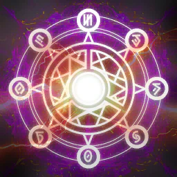
Seize Magic
brak danych
1 031 / 2 889 do 4 w 4 m, usuwa do 2 buffs, plus 371 do 495 / 1 040 do 1 386 o buffs removed; 20 stagger
Perki stygmy
- poziom 5Usuwa do 3
- Cooldown90 s
- MP200
- poziom 201 031 / 2 889 do 4 w 4 m, usuwa do 2 buffs, plus 371 do 495 / 1 040 do 1 386 o buffs removed; 20 stagger
- poziom 5Usuwa do 3
- poziom 5Seal na 5 s gdy 3 albo więcej are removed
- poziom 5Usuwa do 5
- poziom 5−30 s CD
karta skilla na aion2.gg · Aion 2 Companion (aion2.grimvane.app), wartości Global przy podanym poziomie skilla.
Jointstrike: Destructive Attack
4. slot, stagger
573 / 1 605 do jeden cel; spirit dodaje-on; 50 stagger
Czwarty slot, opcja 2. Sirin woli go od Flame Blessing pod stagger; od poziomu 5 da się ładować. Vault 35%.
Perki stygmy
- poziom 5Charge skill, do +200%
- Cooldown60 s
- MP200
- poziom 20573 / 1 605 do jeden cel; spirit dodaje-on; 50 stagger
- poziom 5Charge skill, do +200%
- poziom 5+30% Skill Speed
- poziom 5Zawsze krytyk
- poziom 5Resets Curse i Corrode cooldowns na jego first hit
karta skilla na aion2.gg · Aion 2 Companion (aion2.grimvane.app), wartości Global przy podanym poziomie skilla.
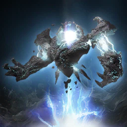
Summon: Ancient Spirit
15, potem 20
Out na 30 s; skill 1 082 / 3 033 do 4 w 4 m; Four Elements z każdy skill; skill again po 7 basic attacks
Największe źródło DPS. Sirin: najpierw 15 (poniżej 15 nie ma skilla co 7 ataków), potem 20. Vault 96%.
Perki stygmy
- poziom 5+10% Ancient Spirit Attack
- Cooldown90 s
- MP200
- poziom 20Out na 30 s; skill 1 082 / 3 033 do 4 w 4 m; Four Elements z każdy skill; skill again po 7 basic attacks
- poziom 5+10% Ancient Spirit Attack
- poziom 5X1,5 Spirit's Descent chance i obrażeń na 30 s
- poziom 5Skill po 5 basic attacks
- poziom 5+20% Ancient Spirit stats
karta skilla na aion2.gg · Aion 2 Companion (aion2.grimvane.app), wartości Global przy podanym poziomie skilla.
Magic Block
brak danych
1 071 / 3 001 do jeden cel; 75% szansy na Seal na 5 s; 20 stagger
Perki stygmy
- poziom 550% szansy na Root na 5 s
- Cooldown60 s
- MP200
- poziom 201 071 / 3 001 do jeden cel; 75% szansy na Seal na 5 s; 20 stagger
- poziom 550% szansy na Root na 5 s
- poziom 5-1 000 wróg Max Stamina na 5 s
- poziom 5+2 s Seal
- poziom 5+25% Seal chance
karta skilla na aion2.gg · Aion 2 Companion (aion2.grimvane.app), wartości Global przy podanym poziomie skilla.
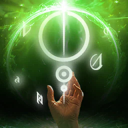
Kaisinel's Power
brak danych
+20% Status Effect Chance i Resist for 10 / 20 s
Perki stygmy
- poziom 5+150 Block i Evasion
- Cooldown60 s
- poziom 20+20% Status Effect Chance i Resist for 10 / 20 s
- poziom 5+150 Block i Evasion
- poziom 5+15% Status Effect Resist
- poziom 5+150 Accuracy
- poziom 5+15% Status Effect Chance
karta skilla na aion2.gg · Aion 2 Companion (aion2.grimvane.app), wartości Global przy podanym poziomie skilla.
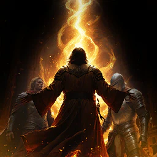
Flame Blessing
4. slot
For 10 / 20 s, 50% szansy na zadaje 234 / 658 dodatkowe obrażenia gdy twoje attack lands; 1 s internal cooldown
Czwarty slot, opcja 1 (ereskus, aion2.gg; 44% buildów, 91% topu wg aion2data).
Perki stygmy
- poziom 5+100 Accuracy
- Cooldown60 s
- poziom 20For 10 / 20 s, 50% szansy na zadaje 234 / 658 dodatkowe obrażenia gdy twoje attack lands; 1 s internal cooldown
- poziom 5+100 Accuracy
- poziom 5+100 Critical Hit
- poziom 5+10% Critical Damage Boost
- poziom 5-50% na dodatkowe obrażenia's cooldown
karta skilla na aion2.gg · Aion 2 Companion (aion2.grimvane.app), wartości Global przy podanym poziomie skilla.

Assault Terror
brak danych
939 / 2 632 do 4 w 4 m (30 m reach); 30% szansy na Fear players na 5 s; Defense do +20% o cele hit
Perki stygmy
- poziom 5+20% Attack na 5 s
- Cooldown120 s
- poziom 20939 / 2 632 do 4 w 4 m (30 m reach); 30% szansy na Fear players na 5 s; Defense do +20% o cele hit
- poziom 5+20% Attack na 5 s
- poziom 5500 MP obrażeń
- poziom 5+10 m reach
- poziom 5+20% Fear chance
karta skilla na aion2.gg · Aion 2 Companion (aion2.grimvane.app), wartości Global przy podanym poziomie skilla.
Build PvE
Skrót z buildu PvE autora (Global, lvl 45, stan 31.10.2026). Kolejność „najpierw podbij” jest z mety aion2data (495 najsilniejszych Spiritmasterów Global).
- Skille: Combustion (cel 20) → Elemental Fusion (cel 20) → Summon: Fire Spirit (16–20) → Cold Shock (16) → Jointstrike: Curse (12–16) → Summon: Water Spirit i Summon: Earth Spirit (14–16).
- Na 45 punkty skilli starczą na około 9 z 22 skilli na poziomie 10. Resztę dają Daevanion (+4), gear i Arcana. Do 20 obowiązkowe są Combustion i Elemental Fusion (Sirin); ereskus i aion2.gg dokładają Fire Spirit.
- Stygmy (Aion2Vault, 450 buildów; Global ma 4 sloty): Enhance: Spirit's Benediction 97% — przed Ancient Spirit, duch przejmuje buffy; Summon: Ancient Spirit 96% — najpierw 15 (poniżej 15 nie ma skilla co 7 ataków, Sirin), potem 20; Jointstrike: Corrode 87%; czwarty slot Flame Blessing 44% (ereskus, aion2.gg) albo Jointstrike: Destructive Attack 35% (Sirin, pod stagger, ładowany od poziomu 5).
- Pasywki: Spirit Strike i Mental Focus, potem Element Unification, potem Spirit Revitalization. Corrode, Spirit's Descent i Consecutive Countercurrent to B-tier u Sirina. Spirit Strike: Sirin S-tier, ereskus numer 1, aLuckyRO uważa ją za PvP — źródła się nie zgadzają.
- Duchy: Fire, Water i Earth to standard (97–98% buildów). Wind jako czwarty daje więcej żywiołów i zżera manę; Sirin chce wtedy mikstur MP albo zostawia 3 duchy. aion2.gg i ereskus zostawiają Wind na poziomie 1. Earth Spirit zbiera aggro — zdejmij go, jeśli zabiera cel tankowi.
Makro wbudowane w grę: trzymaj je razem z Cold Shock na LPM. Poza makrem zostaw Ancient Spirit, Benediction, Flame Blessing i Destructive Attack. Nie używaj makr z programów myszy.
Ściąga do pobrania
Obrazki z tego samego opracowania co karty. Tekst na stronie jest przepisany obok, żeby dało się go wyszukać. Na ściądze skilli Clerica piąta specjalizacja bywa ucięta („+1 więcej”) — pełną listę ma karta powyżej.
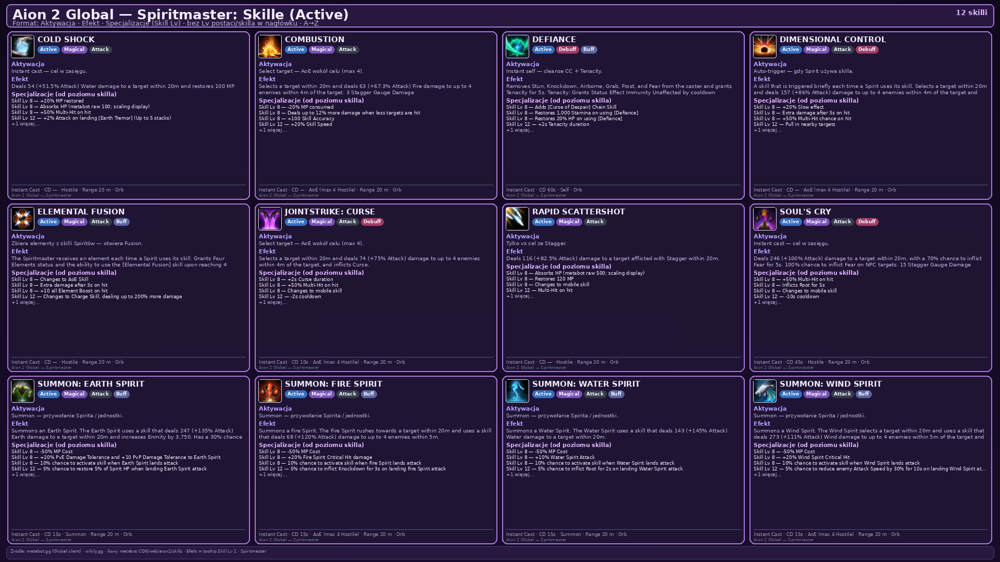
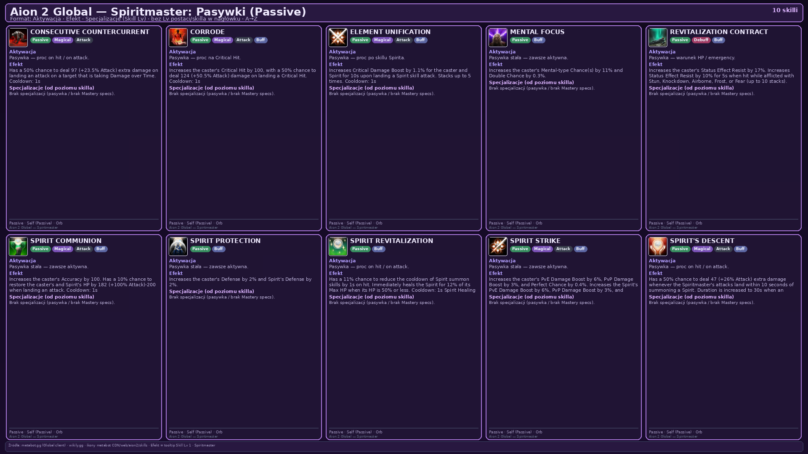
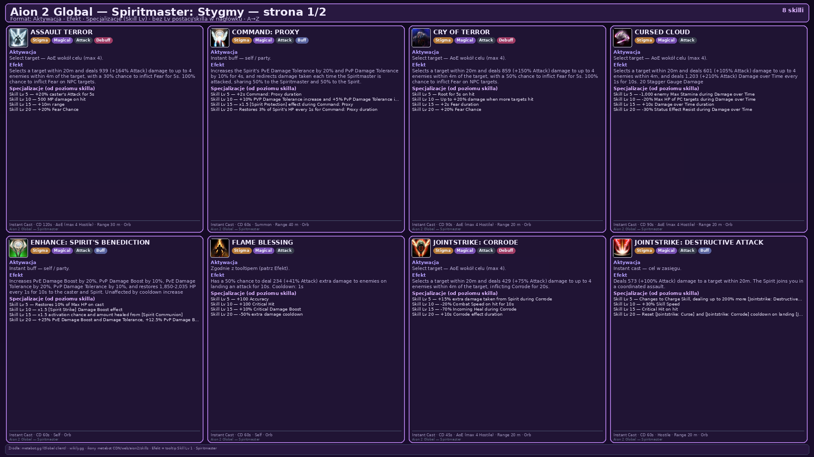
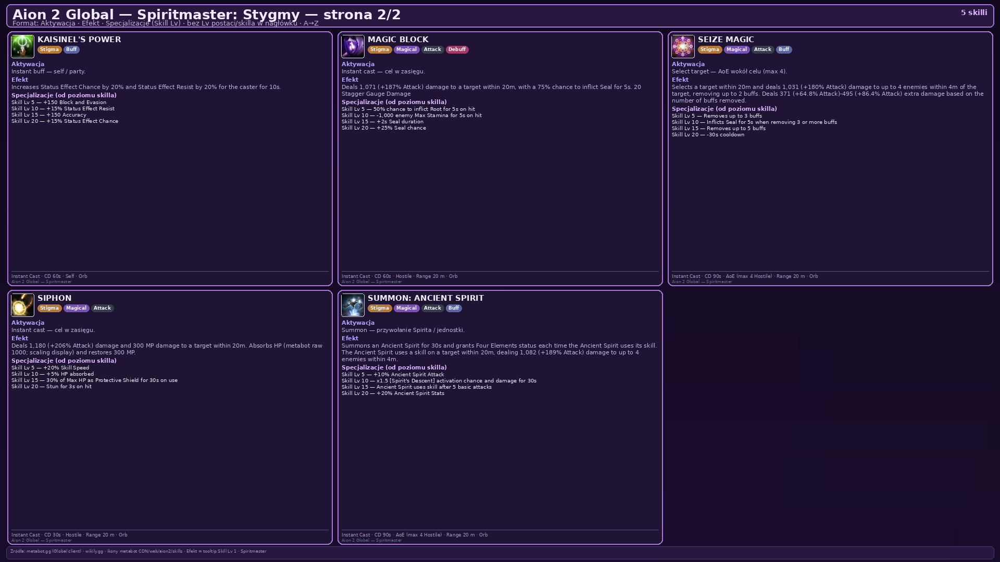
Źródła
- Aion 2 Companion — skille, pasywki, stygmy
- aion2.gg — lista skilli klasy
- aion2.gg — build PvE
- aion2data.com — dane klienta Global
- aion2data.com — Spiritmaster: wszystkie skille (dane klienta Global 2026.10.28)
- aion2data.com — Spiritmaster PvE (meta top graczy)
- wariant tajwański
- Aion2Vault — Spiritmaster PvE (init.rb, Grobs, aLuckyRO, Hemi, Tsuruf, OneTimeACraft)
- Aion2Vault — statystyki buildów
- DaevaOS — poradnik ereskusa (Global)
- DaevaOS — poradnik Sirina
- Aion2.gg — Spiritmaster PvE
- build PvE Group
Data tej strony: 11 listopada 2026. Edycja Global (Steam, EU). Nazwy skilli są po angielsku, tak jak w kliencie.